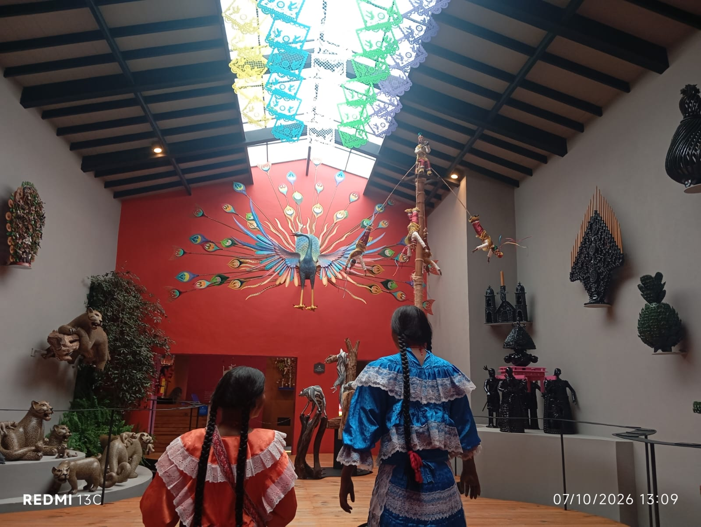

Está en Calle Hidalgo 208, en el centro, en una casona antigua del siglo XVIII. La entrada es gratis y te dan recorrido con guía.
Adentro hay 2 salas con piezas de grandes maestros artesanos de todo México:
Sirve para que conozcas que lo que hacen los artesanos con sus manos es arte, y para cuidar las técnicas que se heredan de abuelos a nietos.

GASTRONOMIA